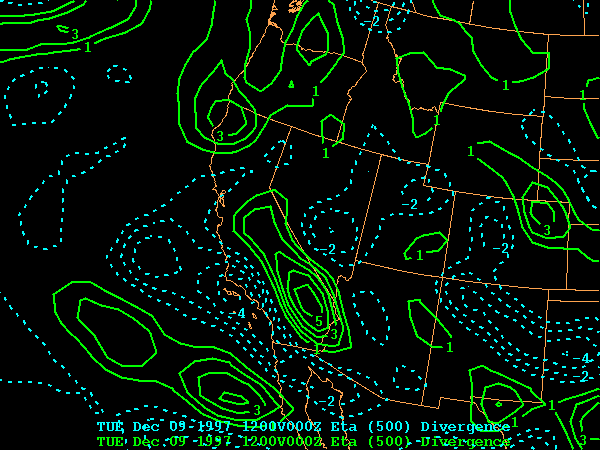
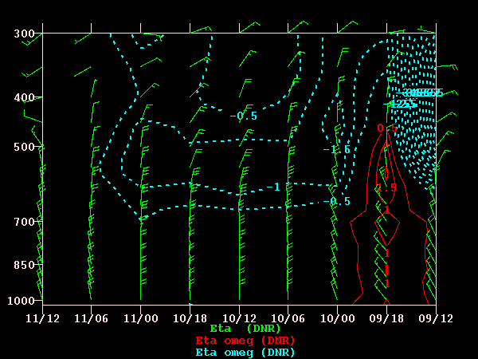

Macros comprise a list of key/value pairs, just like Field Description Files (FDFs). A macro consists of two sections, a header section listing the type and a description, and the operation section containing a list of commands that are executed consecutively. In the operation section, you specify the name of an existing FDF. You can override the values of any parameters defined in the FDF in subsequent lines. Then, the operation command "run" is used to actually draw the graphic. You may include as many FDFs in a macro as you wish, as long as each FDF is followed by the "run" command.
Typically, a macro will run a series of FDFs. After an FDF is read, any of the parameters in that FDF may be modified before the display routine is invoked. This allows users to use FDFs as generic building blocks that they can modify to enhance the final display.
Macros must reside in a directory pointed to in the file "Garp_defaults". The GARP distribution includes macro subdirectories that reside adjacent to FDFs that these macros invoke. This physical separation between macros and FDFs is not required. Some users may choose to put macros and the FDFs that these macros invoke in the same directory. However, by physically separating macros and FDFs it is easier to organize these files. Also, putting macro directories adjacent to FDF directories simplifies the subdirectory specification in macros. An advantage of putting macros and FDFs in the same directory is that the user does not have to click on a different chapter to view a list containing both FDFs and macros.
Like FDFs, macros have some keys assigned with special meaning. There are two required parameters followed by a list of significant parameters. The required parameters are the "type" which must be "macro" and the macro "description".
There are some significant parameters that are not seen in FDFs and have special meaning in macros. They are:
directory: the FDF directory as defined in Garp_defaults. chapter: the subdirectory in which the FDF is found. fdf: the FDF to read in. operation: perform command.
Next, I'll present a simple macro and explain how it works. Unlike FDFs, there is a definite top-down organization to macros. This is because commands are performed as they are read in. For example, here's a macro that displays divergence with positive values in one color and line type and negative values in a different color and line type. (As you'll see, macros are especially convenient for this type of field because you can filter all the zero contour lines that you might otherwise see.)
! GARP Macro Template ! ! Field: Divergence of observed wind (s^-1) ! ! ! *** Required Parameters *** type = macro description = Divergence of observed wind (s^-1) ! *** End of Required Parameters *** ! ! *** Significant Parameters *** chapter = hidden fdf = DivWind_s-1 hilo = n pres_cint = 1 pres_cmin = 1 pres_cmax = line_type = -2 line_width = scale = 5 operation = run pres_cmin = -100 pres_cmax = -1 operation = run ! *** End of Parameters ***
The FDF for this macro is in a directory called "hidden". This is to indicate we want to hide the FDF from any menu since plotting the raw FDF yields an ugly display (many zero lines). Next the "fdf" key indicates which FDF to read in. GARP reads this FDF and subsequent keys are read in to modify the FDF values. When the key "operation" is read, GARP runs the FDF with modifications and displays the result. After that, subsequent keys are read to modify the current FDF, which is still divergence, and then displayed when the next "operation = run" key/value pair is read.

In the GUI, scalar fields and vector fields are kept in separate scrolled lists. However, you can display both scalar and vector fields within the same macro. The following example uses the "directory" key to point to a vector FDF.
! GARP Macro Template ! ! Macro: Omega and Winds. ! ! ! *** Required Parameters *** type = macro description = Omega and Winds. ! *** End of Required Parameters *** ! ! *** Significant Parameters *** ! ! Omega chapter = general fdf = Omega_mbs-1 pres_cint = 0.5 pres_cmax = -0.5 line_color = 6 line_type = 2 line_width = 2 line_label_frequency = 1 yaxis_upper = 300 operation = run pres_cmin = 0.5 pres_cmax = line_color = 2 line_type = 1 line_width = 1 operation = run ! ! Winds directory = vpvectorfdf fdf = Wind_kts line_color = 3 wind_symbol_color = 3 wind_symbol_size = 0.8 operation = run
This FDF displays a time/height profile of omega and winds at the current location. Note that since the vector FDF "Wind_kts" resides in a subdirectory called "general" (as did the FDF "Omega_mbs-1"), you don't need to respecify this subdirectory name.

Those familiar with GEMPAK scripts will find writing macros very straightforward. The macros provided in this distribution were transposed directly from GEMPAK scripts to test the versatility of macros. There are still some functions you can perform in GEMPAK scripts that you cannot do in macros, such as manipulations requiring multiple files from multiple times.